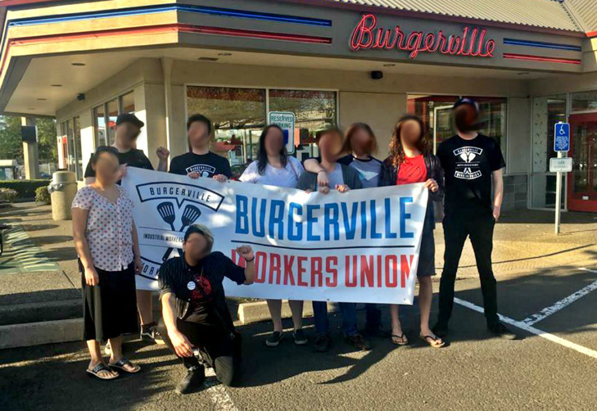

Submitted on Mon, 04/30/2018 - 1:45pm
By Burgerville Workers Union - It's Going Down, April 24, 2018
Burgerville Workers Union has won a union election in one location, meaning that the company will be forced to negotiate a contract with the workers. Other stores are expected to soon come on board. BVWU, a part of the IWW, also becomes the first fast food chain in the US to be unionized.
We won the election. We did it. We made history.
Today workers at 92nd and Powell overwhelmingly voted yes, making the Burgerville Workers Union the only formally recognized fast food union in the country. For a long time people have dismissed fast food as unorganizable, saying that turnover is too high, or the workers are too spread out. Today Burgerville workers proved them wrong.
The fight isn’t over, of course. We still need to bargain a fair contract with Burgerville, and until then the boycott still stands. And we need to remember what got us to this point: workers taking action for themselves, standing up against poverty wages and horrible conditions. We got here because of the strike, union benefits, pickets, and marches on the boss. We got here through direct action, and that won’t change now that we’ve won an election. If anything it’s even more important.
In this moment of victory we want to celebrate, yes, but we also want to turn our attention to the 4.5 million other fast food workers in the United States. We want to speak to everyone else who works for poverty wages, who are constantly disrespected on the job, who are told they aren’t educated enough, aren’t experienced enough, aren’t good enough for a decent life. To all of those workers, to everyone like us who works rough jobs for terrible pay, we say this:
Don’t listen to that bullshit. Burgerville workers didn’t, and look at us now.
Because our win today isn’t just about Burgerville. It’s about history. It’s about a movement of workers who know that a better world is possible, and that together they can make that world real.
Today we became the only recognized fast food union in the country. But we won’t be the only one for long.